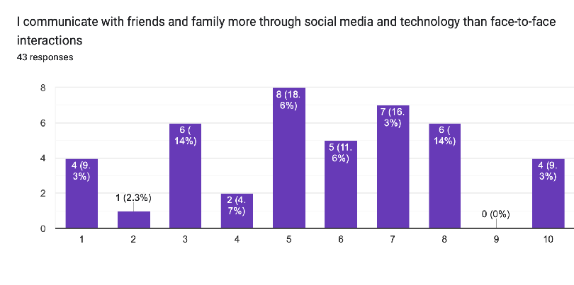
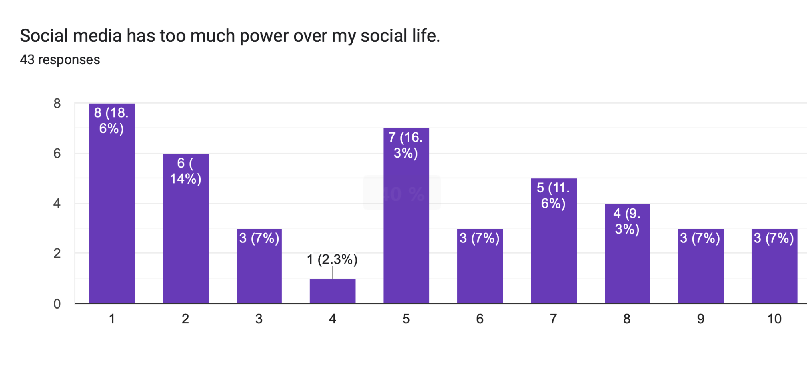
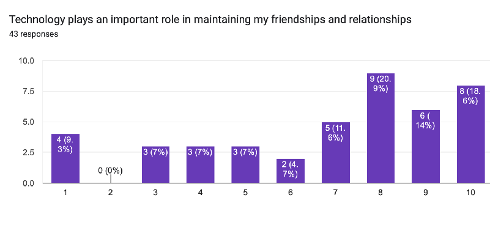
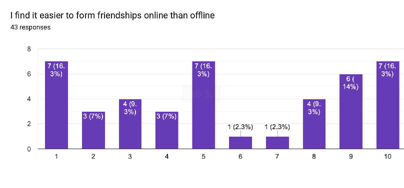
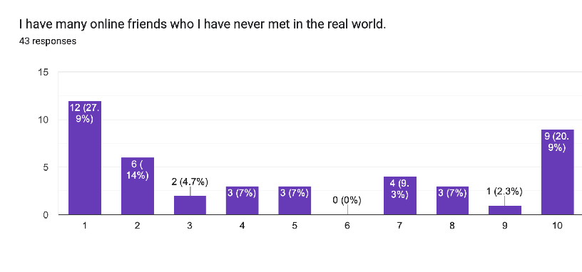
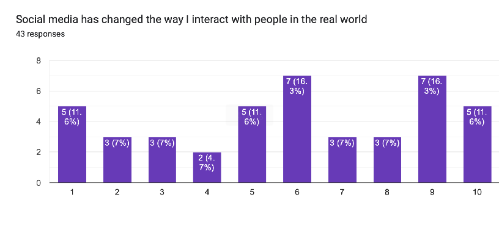
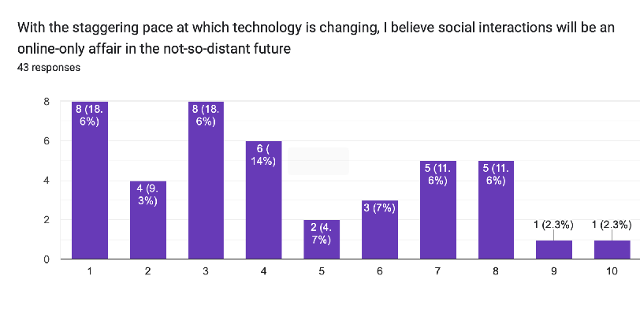
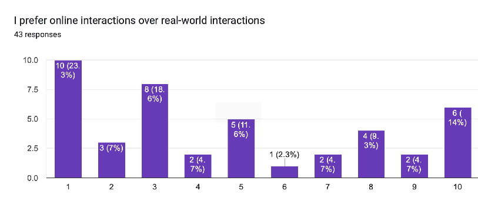
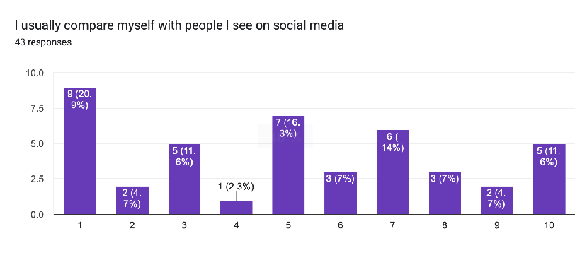
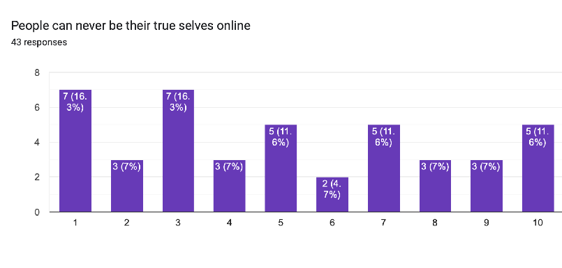

Abstract
This study plunges into the intricate relationship between social media and adolescent interpersonal relationships. This study investigates the impact of social media on various aspects of teenagers' interpersonal lives, including relationship dynamics, friendship formation, online vs. offline interactions, self-esteem, and relationship satisfaction, based on an in-depth inspection of relevant literature and statistical data from credible sources. The findings emphasise social media's good and bad influences, underlining the importance of a nuanced understanding of its role in the lives of youngsters today.
Ⅰ. Introduction
Instagram's quick rise, a 13-year-old network with 2.35 billion global users, shows the revolutionary power of modern social media. These digital networks, which have become a vital part of young people's daily lives, have transformed entertainment, communication, social relationships, learning, and self-expression during the last decade. This study investigates the substantial impact of social media on adolescent interpersonal connections. We investigate the multifaceted influences on this critical component of adolescent life using a combination of secondary research and primary investigations. Social media platforms are increasingly pervasive in kids' life, drastically affecting how they create and sustain relationships with others. The goal of this study is to look at how social media affects teenagers' social lives in a variety of ways, with a focus on five key sentiments: relationship dynamics, friendship formation, online vs. offline interactions, impact on self-esteem and body image, and relationship satisfaction and well-being. To provide a full grasp of the topic area, this study combines a survey of relevant literature with statistical data analysis.
II. Methodology:
A survey-based study methodology was used to investigate the
impact of social media on adolescent interpersonal interactions.
The survey questionnaire was given to a varied group of students
from varying socioeconomic backgrounds and social media usage
behaviors. The study asked about five specific feelings:
relationship dynamics, friendship creation, online vs. offline
interactions, impact on self-esteem and image, and relationship
satisfaction and well-being. On a Likert scale, respondents were
asked to score their experiences and sentiments on: 1.Relationship
dynamics
2.Friendship formation
3.Online vs Offline
4.Impact on self-esteem and image
5.Relationship
Satisfaction and Well-being
III. Review Literature
1. Relationship Dynamics
The impact of social media on
relationship dynamics has been extensively researched. According
to Anderson and Jiang (2018), 81% of teenagers in the United
States routinely use social media, and these platforms are
frequently used as a primary source of communication among peers.
While using social media allows for quick and easy communication,
it can also lead to misunderstandings and conflicts owing to the
lack of nonverbal indicators (Valkenburg et al., 2006).
Nonetheless, it is critical in the maintenance of long-distance
friendships (Ellison et al., 2007).
2. Formation of Friendship
With the advent of social media, teenagers' friendship-building
has transformed. According to Boyd (2014), social media sites such
as Facebook and Instagram enable kids to interact with people who
share their interests and hobbies, hence widening their social
circles. According to Vannucci et al. (2017), while online
friendships can be helpful first point of contact, they typically
lack the depth and intimacy of offline relationships,
necessitating face-to-face meetings for genuine ties to emerge.
3. Online vs. Offline
The preferences of teenagers for online vs. offline interactions
have been extensively researched. According to a Pew Research
Center survey (Anderson & Jiang, 2018), while teenagers respect
digital communication for its ease, they equally prefer in-person
encounters for their genuineness. According to the report, 45% of
teenagers are overwhelmed by the drama that unfolds on social
media.
4. Impact on Self-esteem and Image
The effect of social media on self-esteem and body image has
received a lot of attention. According to Valkenburg et al.
(2006), social media use can lead to enhanced social self-esteem
in some youths since it allows for expressing oneself and support
from others. However, the pursuit of unreachable beauty standards,
as well as the ubiquity of image-focused content, can have a
negative impact on self-esteem, particularly in young girls
(Vannucci et al., 2017).
5. Satisfaction and Well-Being in Relationships
The effect of social media on overall relationship happiness and
well-being continues to be debated. While some teenagers reported
feeling more connected and pleased with their relationships as a
result of social media, others expressed greater jealousy and
anxiety as a result of online comparison with their classmates'
supposedly flawless lives (Anderson & Jiang, 2022). This paradox
emphasises the importance of a balanced approach to digital media
usage.
This study incorporates statistical data from a Pew Research Center poll performed in 2022 (Anderson & Jiang, 2022) to provide empirical insights. The study included 2,000 teens between the ages of 13 and 17, assuring a representative sample of the adolescent population.
IV. Interpretation and Data Analysis
This study examines statements taken from a random sample of teenagers from 12 different nations. The sample comprises 43 teenagers ranging in age from 13 to 19 years. The study's primary goal was to gather answers from teens about social media and their interpersonal interactions. The teenagers rated comments about social media on a Likert scale of 1-4 (strongly disagree and disagree) to 10 (strongly agree) with 5-6 showing neutral responses The questionnaire's statements address five social media-related topics.
The questionnaire's statements address five social media-related
topics.
1.Relationship Dynamics
2.Formation of Friendships
3.Online Vs Offline
4.Impact on self-image and esteem
5.Satisfaction and Well-Being in Relationships
A. Statements related to Relationship Dynamics
1. I communicate with friends and family more through social media and technology than face-to-face interactions
The bar graph below depicts how much teenagers prefer social media to face-to-face encounters for communicating with friends and family. 18.6% of respondents are “undecided” on whether they prefer to communicate via social media over face-to-face interactions. 14.3% of respondents “agree” or “disagree” with the statement, while 9.3% “strongly agree” or “strongly disagree”.
Figure 1: Responses to the statement “I communicate with friends and family more through social media and technology than face-to-face interactions”
2. Social Media has too much power over my social life
Figure 2: Responses to the statement “Social media has too much power over my social life
A majority of respondents strongly disagree with the statement, with 32.6% “strongly disagreeing” with it, 16.3% “indifferent” on the subject, and a meagre 7% “strongly agreeing” with it.
Figure 3: Responses to the statement “Technology plays an important role in maintaining my friendships and relationship
The majority of respondents "strongly agree" with the given statement, with 53.5% selecting an 8 or above, while only 9.3% appear to "strongly disagree" with the statement. These observations demonstrate how the ease of contact made possible by technology has become critical in maintaining relationships among teenagers today.
B. Statements related to the formation of friendships
1. I find it easier to form friendships online than offline
Figure 4: Responses to the statement “I find it easier to form friendships online than offline”
One of the more divisive questions, 16.3% of respondents either "strongly agree", "strongly disagree" or "remained neutral" on the statement. This demonstrates a split in the sample; some respondents have welcomed technology, while others believe that offline connections are superior. This disparity can be attributable to a variety of things, including concerns with self-esteem and self-image.
2. I have many online friends who I have never met in the real world.
Figure 5:Responses to the statement: “I have many online friends who I have never met in the real world”
The plurality of respondents (27.9%) "strongly disagree" with the statement, followed by 20.9% who "strongly agree," and only 7% who are "neutral." This demonstrates that, despite spending more of their social lives online, teenagers are still hesitant to build relationships with people they have never met in person.
3. Social media has changed the way I interact with people in the real world
Figure 6: Responses to the statement “Social media has changed the way I interact with people in the real world”
The majority of respondents are "neutral" on the issue, with 16.3% and 11.6% selecting 6 and 5, respectively. Another 11.6% "strongly agree" or "strongly disagree" with the statement. According to the comments, most teenagers nowadays struggle to understand or do not notice, how social media affects their real-world interactions.
C. Statements related to Online vs Offline interactions
1. With the staggering pace at which technology is changing, I believe social interactions will be an online-only affair in the not-so-distant future
Figure 7: Responses to the statement “With the staggering pace at which technology is changing, I believe social interactions will be an online-only affair in the not-so-distant future”
One of the least polarising statements, the majority of respondents "strongly disagree" or "disagree" with it, with 18.6% choosing 1 and 3. Only 2.3% of respondents "agree" or "strongly agree" with the statement. Akin to the "I have many online friends who I have never met in the real world" statement, despite the fact that the youth are getting more engaged online, most of them still perceive offline connections to be more natural than online interactions today and in the future.
2. I prefer online interactions over real-world interactions.
Figure 8: Responses to the statement “I prefer online interactions over real-world interactions”
Similarly to the previous assertion, the majority of respondents "strongly disagree" or "disagree" with the statement. 23.3% of respondents chose 1, while 6% "strongly agree" with the proposition and 11.6% remained "neutral." The responses to this statement support the prior assertions that more teenagers are engaged online yet prefer offline interactions.
D. Statements on the impact on self-image and esteem.
1. I usually compare myself with the people I see on social media.
Figure 9: Responses to the statement “I usually compare myself with people I see on social media”
Responses to this statement are more nuanced, with 20.9% "strongly disagreeing," 11.6% "strongly agreeing," and 16.3% staying "neutral." A variety of factors, including bullying and self-image, could explain the subtlety in the replies.
E. Statements related to satisfaction and well-being in relationships
1. People can never be their true selves online
Figure 10: Responses to the statement “People can never be their true selves online”
The majority of respondents (16.3%) "strongly disagree" with the statement, while 11.6% are "neutral" or "strongly agree" with it. The majority of negative feedback may suggest a sense of trust in online interactions, implying ordinary or above-average satisfaction with online interactions.
Limitations of the study
1.The study's sample size was very small, with only 43 responses.
2.To ensure that the questionnaire was not tedious for the
respondents, the number of statements was kept to a minimum;
nonetheless, this may have affected the breadth of the information
gathered from the study.
Research findings
1. Respondents tend to favour neither social media nor
face-to-face contact with friends and family, indicating that they
use both for effective interaction.
2. The respondents do not think social media has a too much power
over their social lives.
3. Technology is crucial to respondents in sustaining their
relationships and friendships.
4. The respondents' opinions on whether it is simpler to make
friends online than in person vary. This can be linked to a
variety of individual experiences and factors.
5. Most respondents are hesitant to form relationships with people
they only know through the internet, showing an importance of
real-world interaction when forming relationships.
6. The respondents do not think social media has affected the way
they interact with people in the real world
7. Respondents disagree with the notion that the future of human
interactions and relationships will be entirely online, indicating
that most respondents feel that face-to-face contacts will always
play a significant role in the establishment of relationships.
8. A majority of respondents prefer to communicate in the real
world over online communication
9. The respondents produced nuanced responses when it comes to
comparison with people online, but a majority feel they do not
frequently compare themselves with people online. The nuance in
the responses might be the result of individual experiences and
factors.
10. The responses believe it is difficult for people to be genuine
when they are online.
V. Conclusion
The impact of social media on adolescent interpersonal connections is substantial and complex. This study, based on a thorough literature review and statistical data analysis, finds that, while social media provides opportunities for connectivity and self-expression, it also poses challenges in terms of relationship dynamics, friendship formation, self-esteem, and overall well-being. To create healthy digital interactions and meaningful interpersonal relationships among today's adolescents, educators, parents, and teenagers themselves must realise these distinctions. We can traverse the ever-changing terrain of social media and its influence on adolescent social lives more effectively if we prioritise digital literacy and emotional well-being.
References
- Anderson, M., & Jiang, J. (2018). Teens, social media & technology. Pew Research Center.
- Anderson, M., & Jiang, J. (2022). Teens, social media & technology 2022. Pew Research Center.
- Boyd, D. (2014). It's complicated: The social lives of networked teens. Yale University Press.
- Ellison, N. B., Steinfield, C., & Lampe, C. (2007). The benefits of Facebook "friends:" Social capital and college students' use of online social network sites. Journal of Computer-Mediated Communication, 12(4), 1143-1168.
-
Statista. (2021). Number of monthly active Instagram users
worldwide from January 2013 to June 2018. Statista.
Available:
https://www.statista.com/statistics/253577/number-of-monthly-active-instagram-users/. - Valkenburg, P. M., Peter, J., & Schouten, A. P. (2006). Friend networking sites and their relationship to adolescents' well-being and social self-esteem. CyberPsychology & Behavior, 9(5), 584-590.
- Vannucci, A., Flannery, K. M., & Ohannessian, C. M. (2017). Social media use and perceptions of physical health. Cyberpsychology, Behavior, and Social Networking, 20(11), 713-719.
-
Williams, D., & Gulati, G. J. (2019). Social media use and
perceived social isolation among young adults in the U.S. PLOS
ONE, 14(8), e0210293.
Available:
https://doi.org/10.1371/journal.pone.0210293.